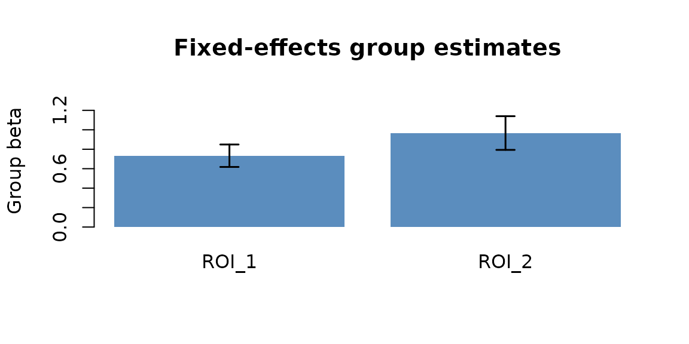
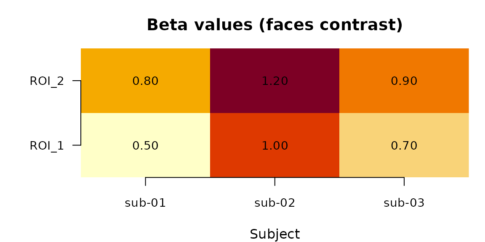
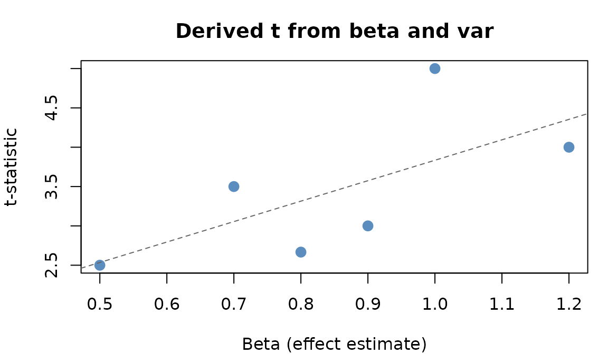
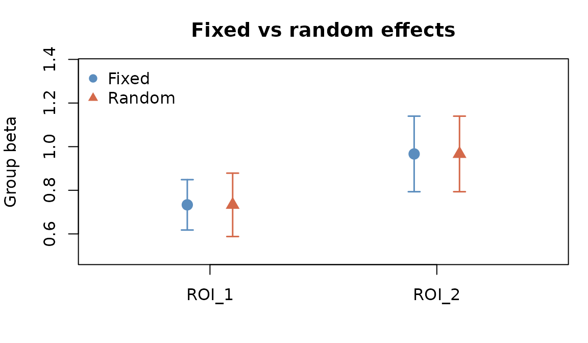

Why fmrigds?
Group-level fMRI analysis follows a predictable pattern: you load one or more subject-level summaries—effect estimates, standardized effects, t-statistics, z-scores, or p-values—run a group model or combine evidence, and correct for multiple comparisons. The statistical operations are well-understood, but the code ends up different every time because the available summaries and input format vary—CSV, NIfTI, HDF5—and the bookkeeping around subjects, contrasts, and spatial locations is tedious.
fmrigds gives you a single pipeline interface that works regardless of input format. You describe what you want (fit an unweighted group model, pool effects with known uncertainty, combine evidence, apply FDR correction) and fmrigds handles the rest.
What is a GDS?
A GDS (Group Data Set) is fmrigds’s core data structure. It organises first-level fMRI outputs along three axes:
- Samples (rows): the spatial units you measured—voxels, parcels, ROIs, or latent components.
- Subjects (columns): the participants in your study.
- Contrasts (slices): the experimental conditions or comparisons (e.g., “faces > places”).
Each combination of these three axes can hold one or more
assays—named numeric arrays that store the actual data.
Common assays include beta (effect estimates),
var (variance), t (t-statistics),
z (z-scores), and p (p-values). You can think
of a GDS as a structured container that keeps all of these arrays
aligned along the same axes.
A GDS also carries a space descriptor that records what the sample axis represents (voxel coordinates, parcel labels, etc.), so spatial information is never lost.
Which path fits the summaries you have?
You do not need a variance or standard error to start. Choose the reducer by what each subject contributes:
| Subject-level input | Ingest as | Group path | What the result means |
|---|---|---|---|
Effect estimate plus var or se
|
beta plus var/se
|
"fixed", "random", or meta-regression |
A pooled effect with first-level precision |
| Beta, standardized effect, or another commensurate signed metric without uncertainty | beta |
one_sample(), group_ols(), or
"perm:onesample"
|
An unweighted model of the subject-level values |
| z-score | z |
"stouffer" |
Combined signed evidence; no pooled effect size |
| t-statistic plus degrees of freedom |
t plus df, then
derive("z")
|
"stouffer" |
Combined signed evidence after calibrating each t-statistic |
| p-value | p |
"fisher" or "combine:lancaster"
|
Combined unsigned evidence; no effect direction |
These paths answer different questions. In particular, a z-score or p-value does not contain enough information to reconstruct an effect estimate and its sampling variance. Do not invent unit variance and feed it to a variance-weighted reducer.
Plan first, compute later
fmrigds uses lazy evaluation: when you call
functions like gds(), derive(), or
reduce(), nothing is computed immediately. Instead, you
build up a plan—a description of the analysis you want to run.
You can inspect the plan, modify it, or add more steps. When you are
satisfied, calling compute() executes the entire pipeline
in one pass.
This design has two advantages:
- You can review the full analysis before any data is loaded.
- fmrigds can optimise the execution (e.g., only reading the assays it needs from disk).
Quick example
Let’s walk through a minimal analysis. First, we create a small CSV
file with ROI-level effect estimates (beta) and variances
(var) for three subjects:
tmp <- tempfile(fileext = ".csv")
writeLines(c(
"sample,subject,contrast,beta,var",
"ROI_1,sub-01,faces,0.5,0.04",
"ROI_2,sub-01,faces,0.8,0.09",
"ROI_1,sub-02,faces,1.0,0.04",
"ROI_2,sub-02,faces,1.2,0.09",
"ROI_1,sub-03,faces,0.7,0.04",
"ROI_2,sub-03,faces,0.9,0.09"
), tmp)Each row records the effect estimate and variance for one ROI, one subject, and one contrast. In a real study, this file might have thousands of rows covering many ROIs and contrasts.
Now we can run a group-level fixed-effects analysis in three steps:
result <- gds(tmp) |> # 1. point to the data (creates a plan)
reduce(method = "fixed") |> # 2. add a group-level reduction step
compute() # 3. execute the plan
assay(result, "beta")
#> , , 1
#>
#> [,1]
#> [1,] 0.7333333
#> [2,] 0.9666667
Group-level effect estimates pooled across three subjects.
The |> operator (called the “pipe”) passes the output
of one step as the input to the next, so you can read the pipeline left
to right: load the data, reduce across subjects, then compute.
The result is a group-level GDS containing a single “meta” subject.
The assay() function extracts a specific assay by name.
Here, beta holds the group-level effect estimates: one
value per ROI, pooled across all three subjects. The error bars show the
standard error of the pooled estimate.
Building and inspecting a plan
Let’s look at the plan step by step. Calling gds() with
a file path creates a plan that knows where the data is, but
has not loaded it yet:
plan <- gds(tmp)
explain(plan)
#> GDS plan
#> adapter: tabular
#> source dims: 2 x 3 x 1 [sample x subject x contrast]
#> space: sample_labels n=2
#> assays: beta, var
#> nodes: 0The explain() function prints a human-readable summary
of any plan or realised GDS. At this stage, the plan only has a source
node.
You can chain additional verbs to describe your analysis. Each verb adds a step to the plan without running anything:
plan <- gds(tmp) |>
derive("t") |> # compute t-statistics from beta and var
reduce(method = "fixed") |> # pool across subjects
posthoc("fdr:bh") # apply FDR correction
explain(plan)
#> GDS plan
#> adapter: tabular
#> source dims: 2 x 3 x 1 [sample x subject x contrast]
#> space: sample_labels n=2
#> assays: beta, var
#> nodes: 3
#> 1. derive
#> 2. reduce:fixed
#> 3. posthocThe plan now has four steps. When you are ready,
compute() runs them all:
g <- compute(plan)
explain(g)
#> GDS
#> dims: 2 x 1 x 1 [sample x subject x contrast]
#> space: sample_labels n=2
#> subjects: 1 (meta)
#> contrasts: 1 (faces)
#> assays: beta[location], var[variance], beta_g[?], var_g[?], se_g[?], z_g[?], p_g[?], Q[?], I2[?], n_eff[n_eff], z[z], p[p], q[?]After compute(), you have a realised
GDS—a concrete object holding arrays of numbers rather than a
plan of future operations.
Exploring a realised GDS
A realised GDS has several accessor functions for inspecting its contents. Let’s start with a simple GDS that has not been reduced yet, so we can see the full three-dimensional structure:
Assays are the named numeric arrays inside a GDS. You can list them and extract individual ones:
# What assays are available?
names(assays(g0))
#> [1] "beta" "var"
# Extract the beta array
assay(g0, "beta")
#> , , faces
#>
#> sub-01 sub-02 sub-03
#> ROI_1 0.5 1.0 0.7
#> ROI_2 0.8 1.2 0.9The beta array has dimensions samples x subjects x contrasts: 2 ROIs, 3 subjects, 1 contrast.

Effect estimates (beta) for each ROI and subject.
Each cell shows the effect estimate for one ROI in one subject. In a real study with hundreds of ROIs, you would see spatial patterns emerge across the heatmap.
You can also query the axis labels directly:
The space descriptor tells you what the sample axis represents:
space(g0)
#> $type
#> [1] "sample_labels"
#>
#> $labels
#> [1] "ROI_1" "ROI_2"
#>
#> attr(,"class")
#> [1] "Space" "space_sample_labels" "gds_space"In this case, the samples are labelled ROIs (ROI_1 and ROI_2). For voxelwise data, the space would instead describe a 3D grid with an affine matrix.
Tidy export
If you want a long-form data frame (useful for plotting with ggplot2
or exporting to other tools), use gds_to_tibble():
head(gds_to_tibble(g0))
#> sample subject contrast beta var
#> 1 ROI_1 sub-01 faces 0.5 0.04
#> 2 ROI_2 sub-01 faces 0.8 0.09
#> 3 ROI_1 sub-02 faces 1.0 0.04
#> 4 ROI_2 sub-02 faces 1.2 0.09
#> 5 ROI_1 sub-03 faces 0.7 0.04
#> 6 ROI_2 sub-03 faces 0.9 0.09Each row is one observation: one sample, one subject, one contrast, with columns for each assay.
Deriving statistics
First-level outputs often include only some statistics. For example,
you might have betas and variances but not t-statistics. The
derive() verb fills in the gaps automatically.
Asking for "t" produced the t-statistic from the
existing beta and var assays using the formula
t = beta / sqrt(var).

Relationship between effect estimates and derived t-statistics.
ROIs with larger effects and smaller variances produce
higher t-statistics. The derive() verb resolves
dependencies automatically—if you ask for "z" but only have
beta and var, it will first derive
t, then convert to z.
Here are the available derivations:
| Target | Requirements | What it computes |
|---|---|---|
t |
beta, var | beta / sqrt(var) |
z |
t (or beta+var) | z-score (normal approximation) |
p |
z (or t) | two-sided p-value |
se |
var |
sqrt(var) (standard error) |
var |
se |
se^2 (variance) |
Derivation only follows mathematically identified relationships. It cannot recover a missing effect estimate or sampling variance from a z-score, t-statistic, or p-value alone.
Group-level analysis with reduce()
The reduce() verb is where the group-level analysis
happens. It combines data across subjects into a single summary, much
like a meta-analysis combines results across studies.
Effects without first-level variance
If every subject contributes the same kind of signed, commensurate
quantity but no standard error—a beta, standardized effect, AUC
contrast, or another scalar map—fit an unweighted model. Map the value
column to the GDS beta assay, which is the response slot
used by the group-model reducers:
effect_only <- data.frame(
sample = rep(c("ROI_1", "ROI_2"), 3),
subject = rep(c("sub-01", "sub-02", "sub-03"), each = 2),
contrast = "faces",
effect_size = c(0.5, 0.8, 1.0, 1.2, 0.7, 0.9)
)
g_effect <- gds(effect_only, effect_cols = list(beta = "effect_size")) |>
one_sample() |>
compute()
assay(g_effect, "coef:(Intercept)")
#> , , 1
#>
#> [,1]
#> [1,] 0.7333333
#> [2,] 0.9666667Here, uncertainty is estimated from between-subject variation. Use
group_ols() instead when you need subject covariates, or
reduce(method = "perm:onesample") for the sign-flip
permutation path. If your effect size has a valid sampling standard
error, ingest it as se, derive var, and use a
meta-analytic reducer instead, for example
gds(data, effect_cols = list(beta = "effect_size", se = "se")) |> derive("var") |> reduce("random").
z, t, or p summary statistics
When you have test statistics rather than effects, combine evidence directly. For z-scores, name the input assay explicitly and use Stouffer’s method:
z_only <- transform(
effect_only[c("sample", "subject", "contrast")],
z = c(1.5, 2.0, 2.1, 2.4, 1.8, 2.2)
)
g_z <- gds(z_only, effect_cols = list(z = "z")) |>
reduce(method = "stouffer", weights = "equal") |>
compute()
assay(g_z, "z")
#> , , 1
#>
#> [,1]
#> [1,] 3.117691
#> [2,] 3.810512
assay(g_z, "p")
#> , , 1
#>
#> [,1]
#> [1,] 0.0018227352
#> [2,] 0.0001386794A t-statistic needs its degrees of freedom before it can be calibrated as a z-score. Once both columns are present, the rest of the path is the same:
t_only <- transform(
z_only[c("sample", "subject", "contrast")],
t = z_only$z,
df = 30
)
g_t <- gds(t_only, effect_cols = list(t = "t", df = "df")) |>
derive("z") |>
reduce(method = "stouffer", weights = "equal") |>
compute()
assay(g_t, "p")
#> , , 1
#>
#> [,1]
#> [1,] 0.0026186744
#> [2,] 0.0002758601For p-values, use effect_cols = list(p = "p") with
method = "fisher" or
method = "combine:lancaster". Fisher’s method does not
retain effect direction; prefer Stouffer’s method when signed evidence
matters.
Fixed-effects
A fixed-effects model assumes that every subject shares the same true effect. It pools estimates using inverse-variance weighting—subjects with more precise estimates (smaller variance) get more weight:
g_fe <- gds(tmp) |>
reduce(method = "fixed") |>
compute()
names(assays(g_fe))
#> [1] "beta" "var" "beta_g" "var_g" "se_g" "z_g" "p_g" "Q"
#> [9] "I2" "n_eff" "z" "p"The result contains the pooled beta, its
var, derived z and p values, and
diagnostic assays like cochran_q (a test of whether the
effect really is the same across subjects). Notice that
subjects() now returns "meta" instead of
individual subject names:
subjects(g_fe)
#> [1] "meta"Random-effects
If you expect the true effect to vary across subjects (which is common in fMRI), a random-effects model is more appropriate. It estimates both the average effect and the between-subject variability:
g_re <- gds(tmp) |>
reduce(method = "random") |>
compute()
names(assays(g_re))
#> [1] "beta" "var" "beta_g" "var_g" "se_g" "z_g" "p_g" "tau2"
#> [9] "Q" "I2" "n_eff" "z" "p"The additional tau2 assay estimates between-subject
variance at each sample location. When tau2 is large,
subjects disagree about the effect size at that location.

Fixed- vs random-effects group estimates. Error bars show standard errors.
Random-effects standard errors are wider because they account for between-subject variability in addition to within-subject measurement error.
Meta-regression
You can include subject-level covariates (e.g., age, group
membership) in the group model. First attach the covariates with
with_col_data(), then specify a formula:
covariates <- data.frame(
age = c(25, 32, 28),
row.names = c("sub-01", "sub-02", "sub-03")
)
g_reg <- gds(tmp) |>
with_col_data(covariates) |>
reduce(method = "meta:fe_reg", formula = ~ age) |>
compute()
names(assays(g_reg))
#> [1] "Q" "df_res" "coef:(Intercept)"
#> [4] "coef:age" "se_coef:(Intercept)" "se_coef:age"
#> [7] "z_coef:(Intercept)" "z_coef:age" "p_coef:(Intercept)"
#> [10] "p_coef:age"Each model coefficient and its standard error becomes a separate
assay. Here, coef:age tells you how the effect changes per
year of age at each ROI.
Repeated-measures mixed models
For repeated-measures designs, fmrigds also provides a
restricted Gaussian mixed-model path that is optimized for the case
where every ROI or voxel shares the same observation layout and the same
fixed/random design. The repeated measure lives on the contrast axis,
and its metadata can be extracted directly from a stacked long
table:
subjects_rm <- paste0("sub-", sprintf("%02d", 1:4))
visits_rm <- c("pre", "mid", "post")
time_rm <- c(-1, 0, 1)
rm_df <- expand.grid(
sample = c("ROI_1", "ROI_2"),
subject = subjects_rm,
contrast = visits_rm,
KEEP.OUT.ATTRS = FALSE,
stringsAsFactors = FALSE
)
subject_intercept <- c(-0.20, -0.05, 0.10, 0.25)
names(subject_intercept) <- subjects_rm
sample_shift <- c(ROI_1 = 0.00, ROI_2 = 0.30)
sample_slope <- c(ROI_1 = 0.45, ROI_2 = 0.65)
rm_df$time <- time_rm[match(rm_df$contrast, visits_rm)]
rm_df$beta <- 0.8 +
sample_shift[rm_df$sample] +
subject_intercept[rm_df$subject] +
sample_slope[rm_df$sample] * rm_df$time
rm_df$var <- 0.04
g_rm <- gds(rm_df, contrast_data_cols = "time") |>
reduce(
method = "lmm:ri_slope1_knownvar",
formula = ~ time,
options = list(
slope = "time",
covariance = "diag",
fit = "REML"
)
) |>
compute()
names(assays(g_rm))
#> [1] "sigma2" "vc_intercept" "vc_resid"
#> [4] "sampling_var_mean" "df_res" "logLik"
#> [7] "converged" "vc_slope" "vc_cov_intercept_slope"
#> [10] "corr_intercept_slope" "coef:(Intercept)" "se_coef:(Intercept)"
#> [13] "t_coef:(Intercept)" "p_coef:(Intercept)" "coef:time"
#> [16] "se_coef:time" "t_coef:time" "p_coef:time"The fixed-effect outputs follow the same coef:*,
se_coef:*, t_coef:*, and p_coef:*
naming pattern as the regression reducers. Additional assays report
variance components such as vc_intercept,
vc_slope, vc_resid, and
sampling_var_mean.
Four restricted mixed-model reducers are available:
-
method = "lmm:ri"for a random intercept only -
method = "lmm:ri_slope1"for a random intercept plus one within-subject slope -
method = "lmm:ri_knownvar"and"lmm:ri_slope1_knownvar"for the same random-effects structures withvarincluded as known diagonal sampling variance
The unweighted methods support pooled or voxelwise variance
parameters. The known-variance methods are currently voxelwise only and
fit diag(var) + vc_resid * I + Z G Z'. If only effect
estimates are available, use an unweighted method; do not manufacture
unit variances. See vignette("repeated-measures-lmm") for
implications and variance-quality checks. This family remains
intentionally narrower than lmer().
Post-hoc corrections
When you test many spatial locations simultaneously (hundreds of ROIs, thousands of voxels), some will appear significant by chance. Post-hoc corrections control the false discovery rate.
Add a correction step with posthoc():
g_fdr <- gds(tmp) |>
reduce(method = "fixed") |>
posthoc("fdr:bh") |>
compute()
# The original p-values
assay(g_fdr, "p")
#> , , 1
#>
#> [,1]
#> [1,] 2.141243e-10
#> [2,] 2.390673e-08
# FDR-adjusted q-values
assay(g_fdr, "q")
#> , , 1
#>
#> [,1]
#> [1,] 4.282486e-10
#> [2,] 2.390673e-08A q-value of 0.05 means that among all locations with q-values at or below 0.05, you expect no more than 5% to be false discoveries. Available correction methods:
-
"fdr:bh"— Benjamini–Hochberg (standard FDR; the default choice) -
"fdr:by"— Benjamini–Yekutieli (valid under arbitrary dependence, but more conservative) -
"fdr:spatial"— spatially-aware FDR that groups nearby tests; seevignette("as-plan-and-spatial-fdr")
Writing results to disk
The write_out() verb saves results as part of the
pipeline. It runs transparently—the data passes through to the next
step, and a copy is written to the path you specify:
out_csv <- tempfile(fileext = ".csv")
gds(tmp) |>
reduce(method = "fixed") |>
write_out(out_csv, format = "csv") |>
compute()
#> GDS
#> dims: 2 x 1 x 1 [sample x subject x contrast]
#> space: sample_labels n=2
#> subjects: 1 (meta)
#> contrasts: 1 (faces)
#> assays: beta[location], var[variance], beta_g[?], var_g[?], se_g[?], z_g[?], p_g[?], Q[?], I2[?], n_eff[n_eff], z[z], p[p]
head(read.csv(out_csv))
#> sample subject contrast beta var beta_g var_g se_g
#> 1 ROI_1 meta faces 0.7333333 0.01333333 0.7333333 0.01333333 0.1154701
#> 2 ROI_2 meta faces 0.9666667 0.03000000 0.9666667 0.03000000 0.1732051
#> z_g p_g Q I2 n_eff z p
#> 1 6.350853 2.141243e-10 3.166667 0.3684211 3 6.350853 2.141243e-10
#> 2 5.581053 2.390673e-08 0.962963 0.0000000 3 5.581053 2.390673e-08Supported formats:
| Format | Extension | Best for |
|---|---|---|
"csv" |
.csv | Sharing, inspection in Excel |
"parquet" |
.parquet | Fast columnar storage |
"h5" |
.h5 | Native fmrigds archive (/gds) |
"nifti" |
.nii.gz | Voxelwise maps for neuroimaging tools |
HDF5 is a container, not a synonym for the legacy fmristore schema.
write_out(..., format = "h5") writes the current native
fmrigds /gds layout. The writer stores assays, axes,
spatial structure, axis tables, registered map families, metadata, and
provenance records. The current reader restores the supported GDS data
model; it does not promise that every arbitrary custom metadata field
will be reconstructed by every fmrigds version.
gds(tmp) |>
reduce(method = "fixed") |>
write_out("group_results.h5", format = "h5") |>
compute()
# Later: read the native /gds archive (not a legacy fmristore layout)
plan <- gds("group_results.h5")
restored <- compute(plan)If exact preservation of an application-specific metadata field
matters, verify that field after reading with the fmrigds version used
by your workflow. The legacy label in
vignette("fmristore-ingestion") applies only to older
fmristore layouts such as LabeledVolumeSet, H5ParcellatedScan, and
LatentNeuroVec.
Working with NIfTI files
For voxelwise analyses, you typically have one NIfTI file per subject
per contrast, spread across a directory tree. The
image_catalog() function discovers and organises these
files automatically:
# Discover all NIfTI files under a study directory
catalog <- image_catalog(
root = "study_dir",
pattern = "sub-*/stats/*.nii.gz",
path_regex = "sub-(?<subject>[^/]+)"
)
# Tell fmrigds which files are betas and which are standard errors
catalog <- catalog |>
map_assays(
beta = "cope[0-9]+\\.nii",
se = "varcope[0-9]+\\.nii"
)
# Convert to a GDS plan, applying a group mask
plan <- as_gds(catalog, mask = "group_mask.nii.gz")
# Run the group analysis
result <- plan |> reduce(method = "fixed") |> compute()The code above cannot run here because it needs real NIfTI files on
disk. See ?image_catalog for file discovery and
?map_assays for mapping filenames to assay types.
The pipeline at a glance
Here is the beta-plus-variance branch from start to finish:
gds("data.csv")
|> derive("t")
|> mask()
|> reduce(method = "fixed")
|> posthoc("fdr:bh")
|> write_out("results.csv", format = "csv")
|> compute()For effect-only inputs, replace
derive("t") |> reduce(method = "fixed") with
one_sample(). For z-scores, replace it with
reduce(method = "stouffer", weights = "equal"). Each verb
adds one node to the plan, and compute() executes them in
sequence. With 2 ROIs this runs instantly; in a typical whole-brain
analysis with 100,000+ voxels, the same pipeline scales because fmrigds
reads data lazily and streams through each step.
Next steps
Now that you understand the core pipeline, you might want to explore:
-
vignette("spatial-operations")— masking missing data, aligning subjects in latent spaces, and transforming between spatial representations -
vignette("as-plan-and-spatial-fdr")— chaining operations on realised GDS objects and spatially-aware FDR correction -
vignette("fmristore-ingestion")— reading native fmrigds HDF5 archives and older fmristore layouts (labeled volumes, parcellated data, latent bases) -
?reducefor the full list of reduction methods, including OLS, Stouffer, Fisher, and Lancaster